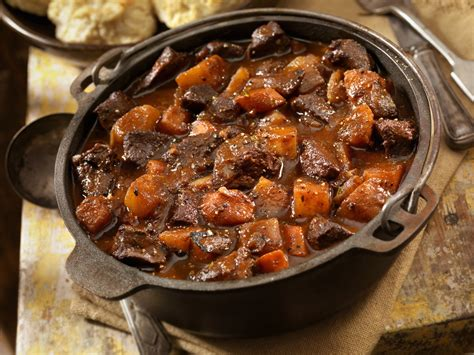
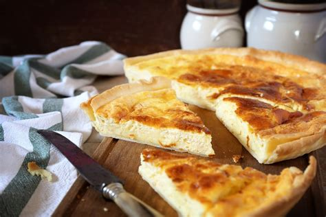
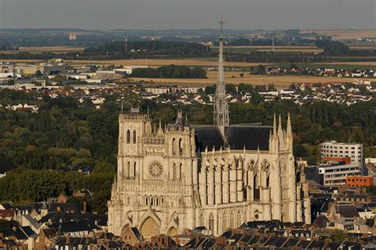
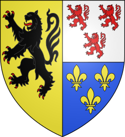

Hauts-de-France
Overview
Hauts-de-France, located in the northernmost part of France, is a region rich in history, industrial heritage, and coastal charm. Bordering Belgium and the English Channel, it includes cities like Lille, Amiens, and Calais. The region is known for its gothic cathedrals, World War I memorials, and hearty cuisine.
Quick Facts
- Capital: Lille
- Regional Languages: French, Picard, West Flemish
- Population: ~6 million
- Famous For: Gothic cathedrals, beer
- Fun Fact: The Amiens Cathedral is the largest in France and a UNESCO World Heritage Site!
Popular Dishes
Carbonnade Flamande

Welsh Rarebit

Ficelle Picarde

Tarte au Maroilles

Famous Landmarks
Amiens Cathedral

Vimy Ridge Memorial
Lille Old Town

Belfry of Arras

Nausicaá Sea Center
Best Time to Visit
Spring and summer (April to August) are ideal for outdoor exploring, with regional festivals, gardens in bloom, and mild coastal weather. Autumn is great for food lovers with seasonal markets and beer celebrations.
Regional Symbols
- Flag:
- Logo: 